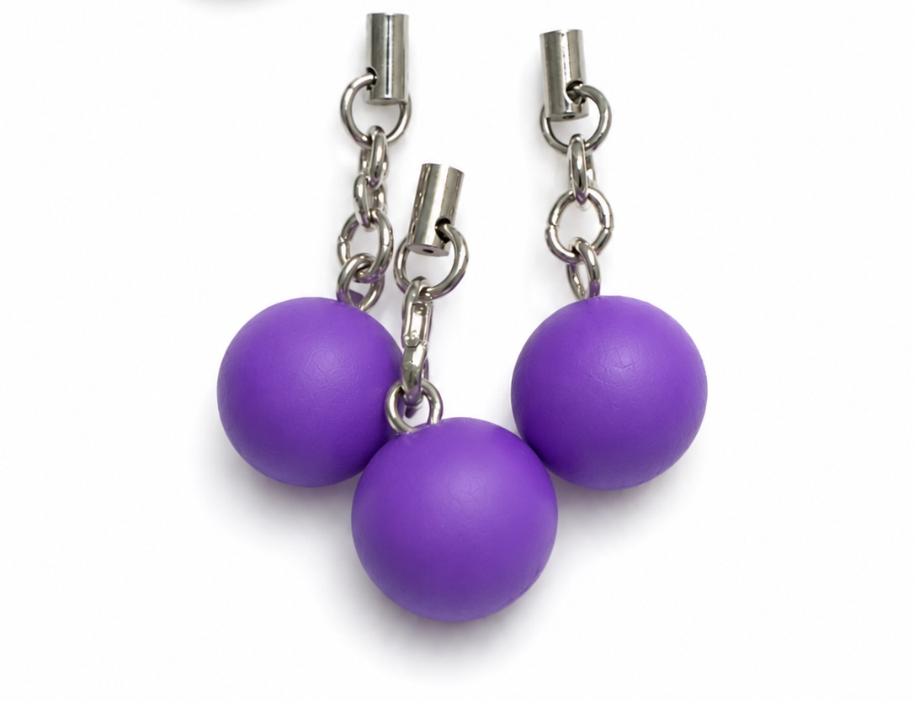
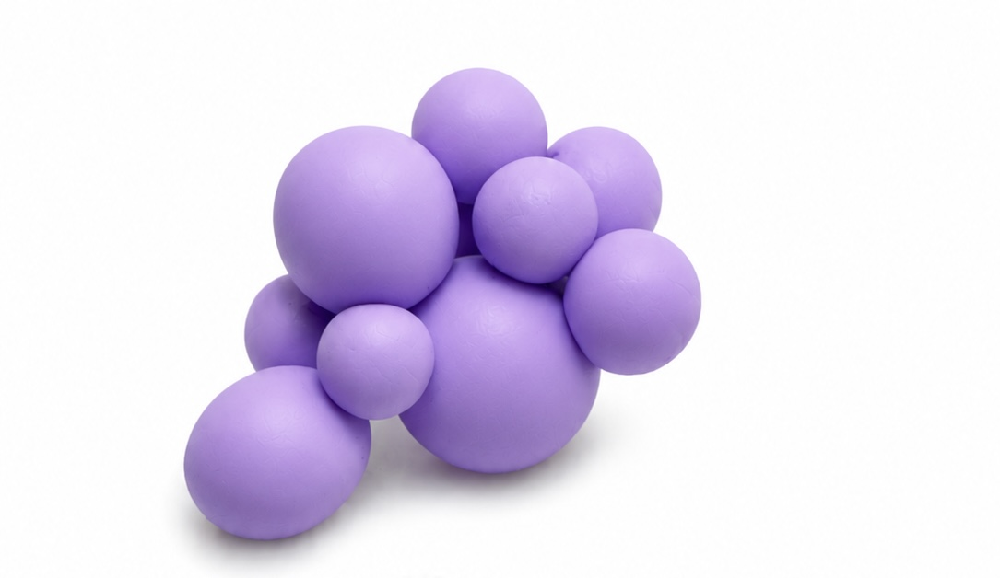
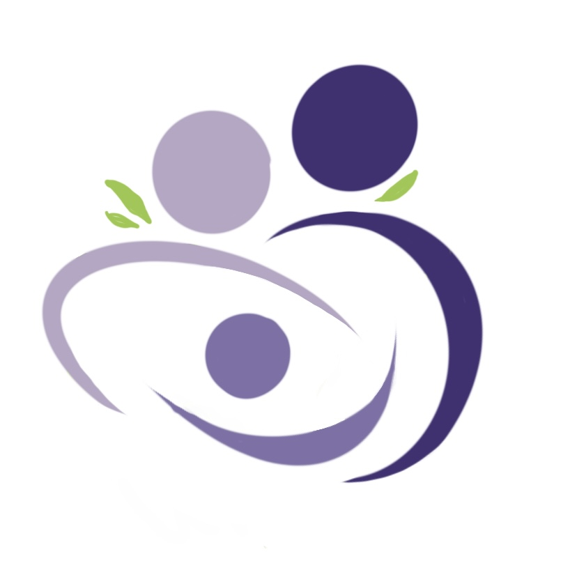
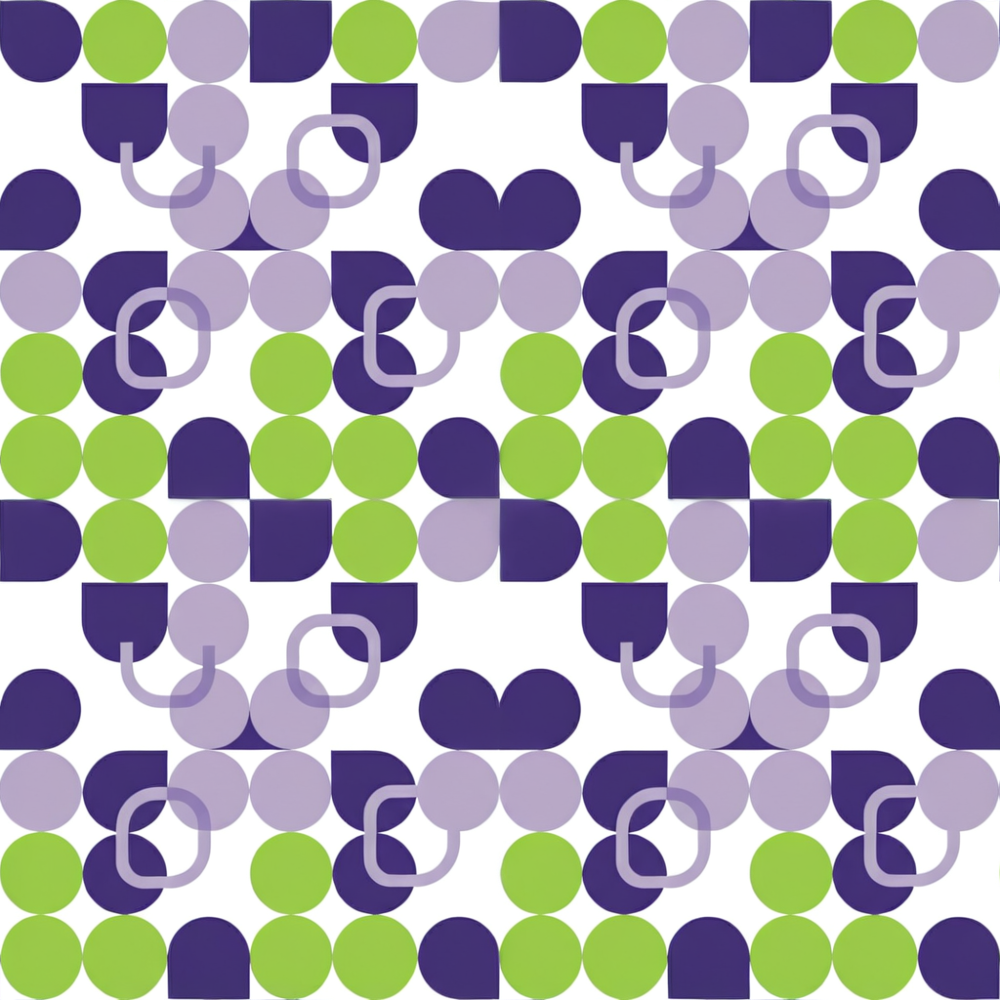
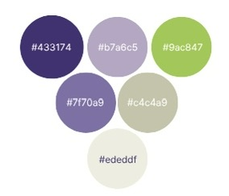
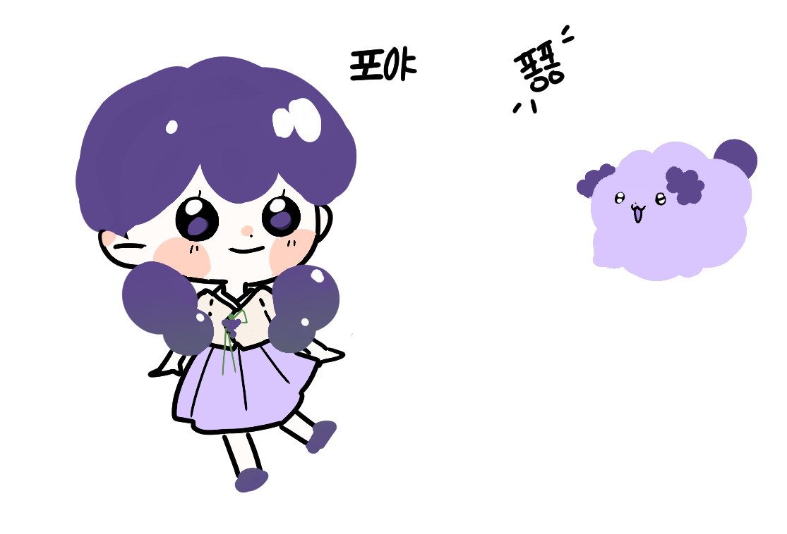

오천년 역사 최초의 벼농사 발상지이자 서해 해풍과 한강이 감싸 안은 풍요로운 도시
포도송이처럼 옹기종기 모여 가정을 이루고 우리의 일상이 달콤하게 자라나는 김포에 오신 것을 환영합니다.
자연과 도시, 역사와 생태가 어우러지는 독특한 정체성
동쪽으로는 서울 강서구, 서쪽으로는 강화군, 남쪽으로는 인천 계양·부평구와 맞닿아 있으며, 북쪽으로는 한강을 사이에 두고 파주시 및 북한 개풍군과 접경한 중요한 거점입니다.
대한민국 최초로 벼농사가 시작된 역사 깊은 고장으로, 예로부터 임금님 수라상에 오르던 명품 '김포금쌀'의 발상지입니다. 비옥한 토양과 풍요로운 상생의 가치를 간직하고 있습니다.
도시 전체가 아름다운 강과 아라뱃길 운하로 둘러싸여 자연과 현대적 도시가 조화를 이룹니다. 서해 해풍과 큰 일교차 덕분에 당도 높은 최고의 '김포포도'가 자라나는 기적의 터전입니다.
공식 포털 데이터를 기반으로 한 김포시의 현황
읍: 통진읍, 고촌읍, 양촌읍
면: 대곶면, 월곶면, 하성면
동: 김포본동, 장기본동, 사우동, 풍무동, 장기동, 구래동, 마산동, 운양동
굿즈 상품 카드를 선택하면 우측 영수증 판넬에 실시간 정보와 가격이 정렬됩니다.


-
마이구미 팀이 그리는 김포의 새로운 내일
신혼부부와 아이 등 젊은 가구 유입이 많은 대도시 김포의 특성을 살려, 차갑고 삭막한 베드타운이라는 인식을 넘어 '따뜻하고 정서적인 홈타운(Home)'의 정체성을 제안합니다. 포도가 영그는 과정처럼 시민의 삶과 공동체가 단단하게 성숙함을 상징합니다.
한 송이 안에 옹기종기 긴밀하게 결합된 포도알은 번성과 상생, 다산을 의미합니다. 이는 각자의 보금자리들이 모여 하나의 풍요롭고 살기 좋은 김포 공동체를 구성하는 정(情) 문화와 완벽하게 대칭을 이룹니다.




일상의 무거운 이동 공간인 골드라인 내부를 포도의 싱그러움과 집 거실 같은 안락함으로 채우는 공익 공공디자인 기획
지하철역 내부의 폐쇄감을 줄이기 위해 승강장 전면과 기둥 상단에 싱그러운 청포도밭 그라데이션 및 일러스트 랩핑을 적용합니다. 녹색 계열의 배색은 대기 승객의 심박수를 낮추고 시각적 스트레스를 완화합니다.
딱딱한 기존의 대기 유도선 대신 아기자기한 포도알 모양의 바닥 그래픽 발판을 배치합니다. 직관적이고 귀여운 디자인을 밟고 서게 유도함으로써, 혼잡한 승강장 내에서 승객 간 자연스러운 심리적 안정 거리를 확보합니다.
열차 내 혼잡 정보를 유쾌하게 재해석합니다. 여유로운 상태는 '싱그러운 청포도', 보통은 '익어가는 보라포도', 혼잡 단계는 '알이 꽉 찬 포도송이' 아이콘으로 전광판에 표기하여 가독성과 심리적 유연성을 높입니다.
대기 중 느끼는 피로감을 놀이 경험으로 전환합니다. 착시 아트를 활용한 바닥 미니 게임 존을 구성하고, 역사 내 포도나무 QR코드를 통해 스마트폰으로 가볍게 즐기는 '포도 수확 AR 미니게임'을 제공하여 지루함을 상쇄합니다.